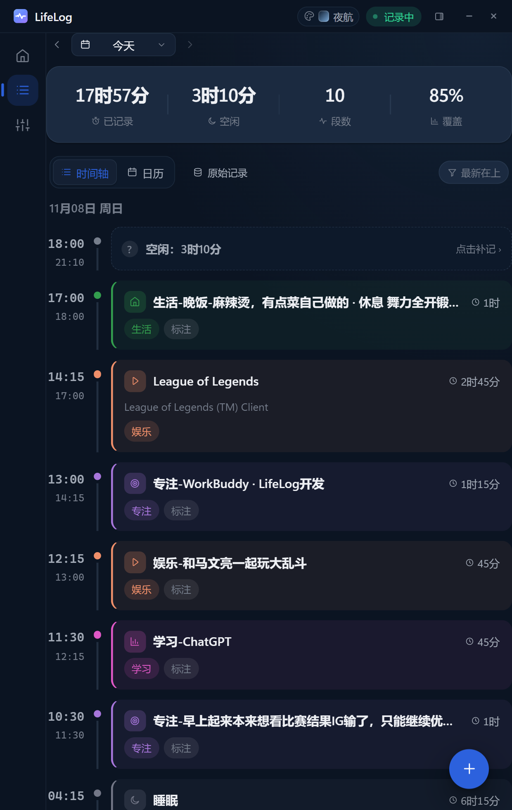
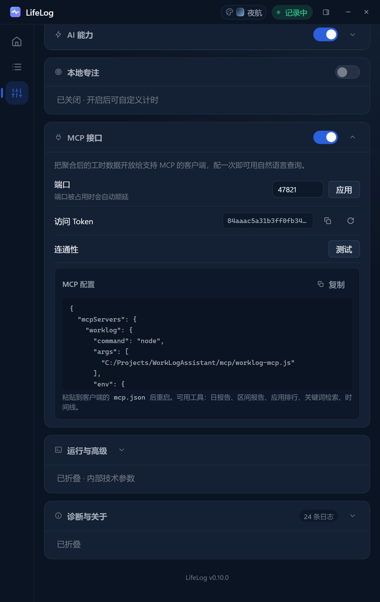
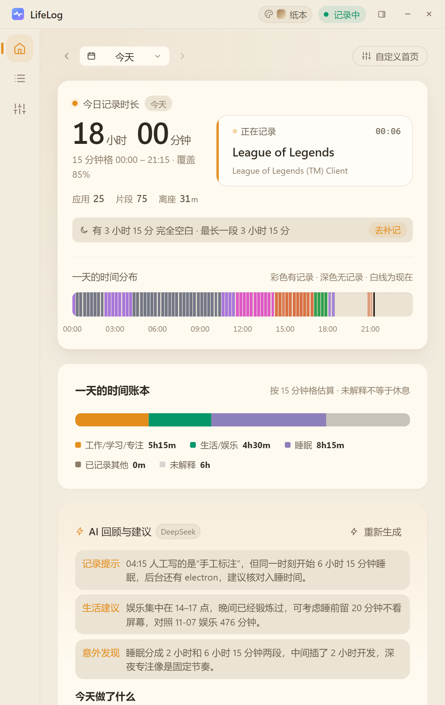
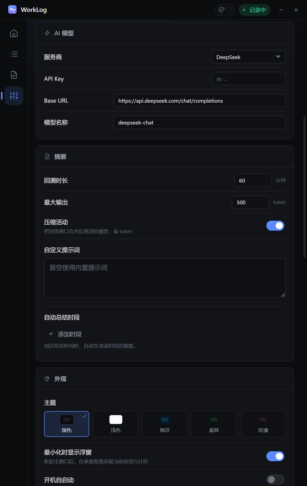

你只管干活，记录、统计、汇总这些事不用再手工补。
常驻后台，每秒采集前台窗口。窗口切换时把连续停留折成片段，每一段都带精确时长。
把带真实时长的会话时间线交给模型，它能算出时间分配、指出需要核对的时段，而不是复述应用名。
内置 MCP Server 和本地 HTTP 接口。接进 WorkBuddy、Claude，直接问「我这周时间花在哪了」。
很多时间记录工具只在窗口切换时记一个时间戳，时长靠「条数 × 采样间隔」去猜， 误差能到几倍。LifeLog 的做法是每秒采样，把一个连续状态折成一段，结束时带着精确毫秒数落盘。

记录过去是为了优化未来。所以除了记，它还管「现在该干什么」—— 三种节奏，都用桌面顶部一个小窗提醒你当前状态和剩余时间。
| 模式 | 节奏 |
|---|---|
| 番茄钟 | 25 分钟专注，5 分钟休息，四轮一组，时长可改 |
| 沉浸 | 15 / 15，节奏更松，适合写作和深度阅读 |
| 罗汉 | 不计时，单任务，只做当下这一件事 |
大多数时间记录工具的数据是死在你自己的界面里的。LifeLog 把聚合结果开放成本地接口， 配一条 MCP，AI 就能直接查询、对比、分析，不用你导表格。
在设置页复制一段配置粘到客户端的 mcp.json，之后在 WorkBuddy、Claude Desktop
这类支持 MCP 的工具里，直接问：
接口只读、只绑定 127.0.0.1、带 token 鉴权。不联网，不上传。

夜航 / 纸本 / 晨雾 / 极光 / 晚霞，各配深浅两版，另有六种强调色可单独调。 分类颜色始终按语义走，换肤不会把「工作」变成别的颜色。


番茄钟、AI、MCP 接口、滴答同步是四个独立插件。关掉不是隐藏入口， 而是那个能力彻底不干活——不联网、不调用、不占资源。
首页底部一块插件坞，点方块切开关、点齿轮跳到参数。开关状态落在原有配置里，不另存一份。
按应用名或窗口标题关键词过滤，命中时根本不写入记录，不是先记下来再删掉。
把已完成的专注读成本地镜像参与统计；也能把确认过的时段写成滴答任务，推过去就是已完成状态。
Windows 10 / 11，64 位，约 75 MB。不需要注册账号，不需要联网也能记录；AI 是可选能力，默认关闭。
当前安装包为 v0.9.0；v0.10.0 的改动已在源码里，构建产物稍后发布。
全部版本在 GitHub Releases。
数据存在本机 %APPDATA%\worklog-assistant\Data，卸载不会自动删除。
不会。记录的数据全部写在本地 JSONL 文件里，程序本身不发起任何上传请求。 唯一的联网行为是「检查更新」时读一下 GitHub 的 release 信息。 只有当你用 AI 回顾功能时，才会把那一小段活动记录发给你自己配置的模型服务商——用不用、用谁的，由你决定。
另外可以在设置里按应用名或窗口标题关键词排除：命中的内容根本不会被写入， 不是先记下来再删掉。
本地工具很难收钱，也不想为了收费塞广告或者阉割功能。现在全功能免费， 后续如果做手机端、多端同步这类需要服务器的能力，再考虑针对那部分收费。
目前只有 Windows。macOS 的采集逻辑已经留了接口，但空闲检测和窗口标题需要另外适配，还没做。 手机端（屏幕时间）在规划里，iOS 的限制比较多，预期要放低。
RescueTime 是云端的，数据在它服务器上，且不开放原始数据。LifeLog 全部本地， 数据格式就是明文 JSONL，你想怎么分析都行；而且它把数据通过 MCP 直接开放给 AI， 这是云端工具做不到的。
采集端是一个常驻的轻量进程，每秒读一次前台窗口信息，CPU 占用基本可以忽略； 内存常驻在几十 MB。记录写入是追加式，不会随当天数据变多而变慢。
能。设置页里可以导出当日 JSON、全部 JSON、全部 CSV，也支持导入合并或覆盖。 数据目录本身是纯文本，直接拷贝走也行。